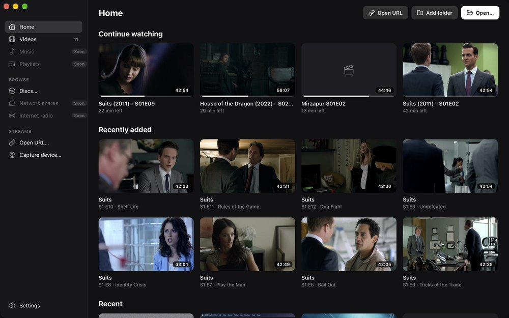

Pick up where you left off.
Continue watching remembers your position in every file and shows a thumbnail of where you stopped. Add a folder and ReVLC builds a library from it, reading show names, seasons and episode titles from your files, so a season stays a season.
